with(airquality, {
plot(Temp, Ozone)
lines(loess.smooth(Temp, Ozone))
})
This lecture, as the rest of the course, is adapted from the version Stephanie C. Hicks designed and maintained in 2021 and 2022. Check the recent changes to this file through the GitHub history.
“The greatest value of a picture is when it forces us to notice what we never expected to see.” —John Tukey
Before class, you can prepare by reading the following materials:
I also highlighted these two free online books:
Material for this lecture was borrowed and adopted from
At the end of this lesson you will:
The ggplot2 package in R is an implementation of The Grammar of Graphics as described by Leland Wilkinson in his book. The package was originally written by Hadley Wickham while he was a graduate student at Iowa State University (he still actively maintains the package).
The package implements what might be considered a third graphics system for R (along with base graphics and lattice).
The package is available from CRAN via install.packages(); the latest version of the source can be found on the package’s GitHub Repository. Documentation of the package can be found at the tidyverse web site.
The grammar of graphics represents an abstraction of graphics ideas and objects.
You can think of this as developing the verbs, nouns, and adjectives for data graphics.
Developing such a grammar allows for a “theory” of graphics on which to build new graphics and graphics objects.
To quote from Hadley Wickham’s book on ggplot2, we want to “shorten the distance from mind to page”. In summary,
“…the grammar tells us that a statistical graphic is a mapping from data to aesthetic attributes (colour, shape, size) of geometric objects (points, lines, bars). The plot may also contain statistical transformations of the data and is drawn on a specific coordinate system” – from ggplot2 book
You might ask yourself “Why do we need a grammar of graphics?”.
Well, for much the same reasons that having a grammar is useful for spoken languages. The grammar allows for
If you think about making a plot with the base graphics system, the plot is constructed by calling a series of functions that either create or annotate a plot. There’s no convenient agreed-upon way to describe the plot, except to just recite the series of R functions that were called to create the thing in the first place.
Consider the following plot made using base graphics previously.
with(airquality, {
plot(Temp, Ozone)
lines(loess.smooth(Temp, Ozone))
})
How would one describe the creation of this plot?
Well, we could say that we called the plot() function and then added a loess smoother by calling the lines() function on the output of loess.smooth().
While the base plotting system is convenient and it often mirrors how we think of building plots and analyzing data, there are drawbacks:
Here is the same plot made using ggplot2 in the tidyverse.
library(tidyverse)
airquality %>%
ggplot(aes(Temp, Ozone)) +
geom_point() +
geom_smooth(
method = "loess",
se = FALSE
) +
theme_minimal()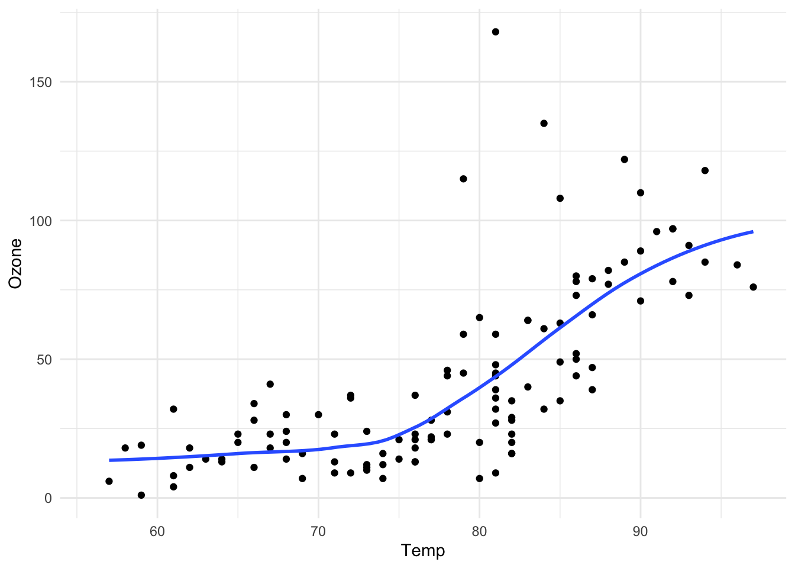
The output is roughly equivalent and the amount of code is similar, but ggplot2 allows for a more elegant way of expressing the components of the plot.
In this case, the plot is a dataset (airquality) with aesthetic mappings (visual properties of the objects in your plot) derived from the Temp and Ozone variables, a set of points, and a smoother.
In a sense, the ggplot2 system takes many of the cues from the base plotting system and from the lattice plotting systems, and formalizes the cues a bit.
It automatically handles things like margins and spacing, and also has the concept of “themes” which provide a default set of plotting symbols and colors (which are all customizable).
While ggplot2 bears a superficial similarity to lattice, ggplot2 is generally easier and more intuitive to use.
qplot()The qplot() function in ggplot2 is meant to get you going quickly.
It works much like the plot() function in base graphics system. It looks for variables to plot within a data frame, similar to lattice, or in the parent environment.
In general, it is good to get used to putting your data in a data frame and then passing it to qplot().
The qplot() function is somewhat discouraged in ggplot2 now and new users are encouraged to use the more general ggplot() function (more details in the next lesson).
However, the qplot() function is still useful and may be easier to use if transitioning from the base plotting system or a different statistical package.
Plots are made up of
Factors play an important role for indicating subsets of the data (if they are to have different properties) so they should be labeled properly.
The qplot() hides much of what goes on underneath, which is okay for most operations, ggplot() is the core function and is very flexible for doing things qplot() cannot do.
One thing that is always true, but is particularly useful when using ggplot2, is that you should always use informative and descriptive labels on your data.
More generally, your data should have appropriate metadata so that you can quickly look at a dataset and know
While it is sometimes a pain to make sure all of your data are properly labeled, this investment in time can pay dividends down the road when you’re trying to figure out what you were plotting.
In other words, including the proper metadata can make your exploratory plots essentially self-documenting.
This example dataset comes with the ggplot2 package and contains data on the fuel economy of 38 popular car models from 1999 to 2008.
library(tidyverse) # this loads the ggplot2 R package
# library(ggplot2) # an alternative way to just load the ggplot2 R package
glimpse(mpg)Rows: 234
Columns: 11
$ manufacturer <chr> "audi", "audi", "audi", "audi", "audi", "audi", "audi", "…
$ model <chr> "a4", "a4", "a4", "a4", "a4", "a4", "a4", "a4 quattro", "…
$ displ <dbl> 1.8, 1.8, 2.0, 2.0, 2.8, 2.8, 3.1, 1.8, 1.8, 2.0, 2.0, 2.…
$ year <int> 1999, 1999, 2008, 2008, 1999, 1999, 2008, 1999, 1999, 200…
$ cyl <int> 4, 4, 4, 4, 6, 6, 6, 4, 4, 4, 4, 6, 6, 6, 6, 6, 6, 8, 8, …
$ trans <chr> "auto(l5)", "manual(m5)", "manual(m6)", "auto(av)", "auto…
$ drv <chr> "f", "f", "f", "f", "f", "f", "f", "4", "4", "4", "4", "4…
$ cty <int> 18, 21, 20, 21, 16, 18, 18, 18, 16, 20, 19, 15, 17, 17, 1…
$ hwy <int> 29, 29, 31, 30, 26, 26, 27, 26, 25, 28, 27, 25, 25, 25, 2…
$ fl <chr> "p", "p", "p", "p", "p", "p", "p", "p", "p", "p", "p", "p…
$ class <chr> "compact", "compact", "compact", "compact", "compact", "c…You can see from the glimpse() (part of the dplyr package) output that all of the categorical variables (like “manufacturer” or “class”) are **appropriately coded with meaningful label*s**.
This will come in handy when qplot() has to label different aspects of a plot.
Also note that all of the columns/variables have meaningful names (if sometimes abbreviated), rather than names like “X1”, and “X2”, etc.
We can make a quick scatterplot using qplot() of the engine displacement (displ) and the highway miles per gallon (hwy).
qplot(x = displ, y = hwy, data = mpg)Warning: `qplot()` was deprecated in ggplot2 3.4.0.
It has a very similar feeling to plot() in base R.
In the call to qplot() you must specify the data argument so that qplot() knows where to look up the variables.
You must also specify x and y, but hopefully that part is obvious.
We can introduce a third variable into the plot by modifying the color of the points based on the value of that third variable.
Color (or colour) is one type of aesthetic and using the ggplot2 language:
“the color of each point can be mapped to a variable”
This sounds technical, but let’s give an example.
We map the color argument to the drv variable, which indicates whether a car is front wheel drive, rear wheel drive, or 4-wheel drive.
qplot(displ, hwy, data = mpg, color = drv)
Now we can see that the front wheel drive cars tend to have lower displacement relative to the 4-wheel or rear wheel drive cars.
Also, it’s clear that the 4-wheel drive cars have the lowest highway gas mileage.
The x argument and y argument are aesthetics too, and they got mapped to the displ and hwy variables, respectively.
In the above plot, I did not specify the x and y variable. What happens when you run these two code chunks. What’s the difference?
qplot(displ, hwy, data = mpg, color = drv)qplot(x = displ, y = hwy, data = mpg, color = drv)qplot(hwy, displ, data = mpg, color = drv)qplot(y = hwy, x = displ, data = mpg, color = drv)Let’s try mapping colors in another dataset, namely the palmerpenguins dataset. These data contain observations for 344 penguins. There are 3 different species of penguins in this dataset, collected from 3 islands in the Palmer Archipelago, Antarctica.

[Source: Artwork by Allison Horst]
library(palmerpenguins)glimpse(penguins)Rows: 344
Columns: 8
$ species <fct> Adelie, Adelie, Adelie, Adelie, Adelie, Adelie, Adel…
$ island <fct> Torgersen, Torgersen, Torgersen, Torgersen, Torgerse…
$ bill_length_mm <dbl> 39.1, 39.5, 40.3, NA, 36.7, 39.3, 38.9, 39.2, 34.1, …
$ bill_depth_mm <dbl> 18.7, 17.4, 18.0, NA, 19.3, 20.6, 17.8, 19.6, 18.1, …
$ flipper_length_mm <int> 181, 186, 195, NA, 193, 190, 181, 195, 193, 190, 186…
$ body_mass_g <int> 3750, 3800, 3250, NA, 3450, 3650, 3625, 4675, 3475, …
$ sex <fct> male, female, female, NA, female, male, female, male…
$ year <int> 2007, 2007, 2007, 2007, 2007, 2007, 2007, 2007, 2007…If we wanted to count the number of penguins for each of the three species, we can use the count() function in dplyr:
penguins %>%
count(species)# A tibble: 3 × 2
species n
<fct> <int>
1 Adelie 152
2 Chinstrap 68
3 Gentoo 124For example, we see there are a total of 152 Adelie penguins in the palmerpenguins dataset.
If we wanted to use qplot() to map flipper_length_mm and bill_length_mm to the x and y coordinates, what would we do?
# try it yourselfNow try mapping color to the species variable on top of the code you just wrote:
# try it yourselfSometimes it is nice to add a smoother to a scatterplot to highlight any trends.
Trends can be difficult to see if the data are very noisy or there are many data points obscuring the view.
A smoother is a type of “geom” that you can add along with your data points.
qplot(displ, hwy, data = mpg, geom = c("point", "smooth"))`geom_smooth()` using method = 'loess' and formula = 'y ~ x'
Here it seems that engine displacement and highway mileage have a nonlinear U-shaped relationship, but from the previous plot we know that this is largely due to confounding by the drive class of the car.
Previously, we did not have to specify geom = "point" because that was done automatically.
But if you want the smoother overlaid with the points, then you need to specify both explicitly.
Look at what happens if we do not include the point geom.
qplot(displ, hwy, data = mpg, geom = c("smooth"))`geom_smooth()` using method = 'loess' and formula = 'y ~ x'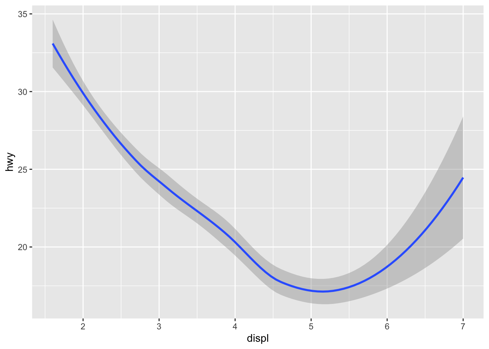
Sometimes that is the plot you want to show, but in this case it might make more sense to show the data along with the smoother.
Let’s add a smoother to our palmerpenguins dataset example.
Using the code we previously wrote mapping variables to points and color, add a “point” and “smooth” geom:
# try it yourselfThe qplot() function can be used to be used to plot 1-dimensional data too.
By specifying a single variable, qplot() will by default make a histogram.
We can make a histogram of the highway mileage data and stratify on the drive class. So technically this is three histograms on top of each other.
qplot(hwy, data = mpg, fill = drv, binwidth = 2)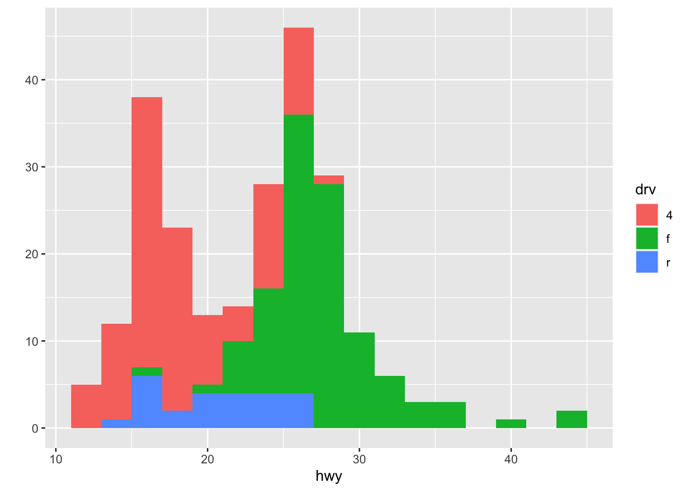
Notice, I used fill here to map color to the drv variable. Why is this? What happens when you use color instead?
# try it yourselfHaving the different colors for each drive class is nice, but the three histograms can be a bit difficult to separate out.
Side-by-side boxplots are one solution to this problem.
qplot(drv, hwy, data = mpg, geom = "boxplot")
Another solution is to plot the histograms in separate panels using facets.
Facets are a way to create multiple panels of plots based on the levels of categorical variable.
Here, we want to see a histogram of the highway mileages and the categorical variable is the drive class variable. We can do that using the facets argument to qplot().
The facets argument expects a formula type of input, with a ~ separating the left hand side variable and the right hand side variable.
Here, we just want three rows of histograms (and just one column), one for each drive class, so we specify drv on the left hand side and . on the right hand side indicating that there’s no variable there (it’s empty).
qplot(hwy, data = mpg, facets = drv ~ ., binwidth = 2)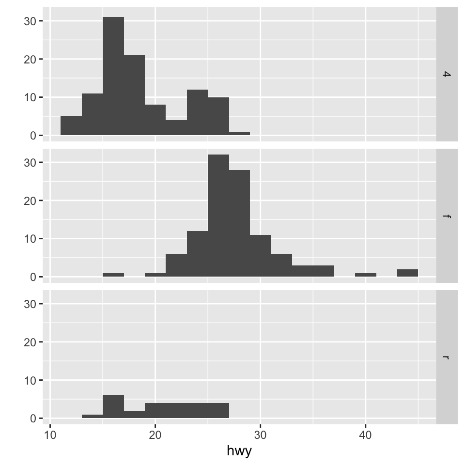
We could also look at more data using facets, so instead of histograms we could look at scatter plots of engine displacement and highway mileage by drive class.
Here, we put the drv variable on the right hand side to indicate that we want a column for each drive class (as opposed to splitting by rows like we did above).
qplot(displ, hwy, data = mpg, facets = . ~ drv)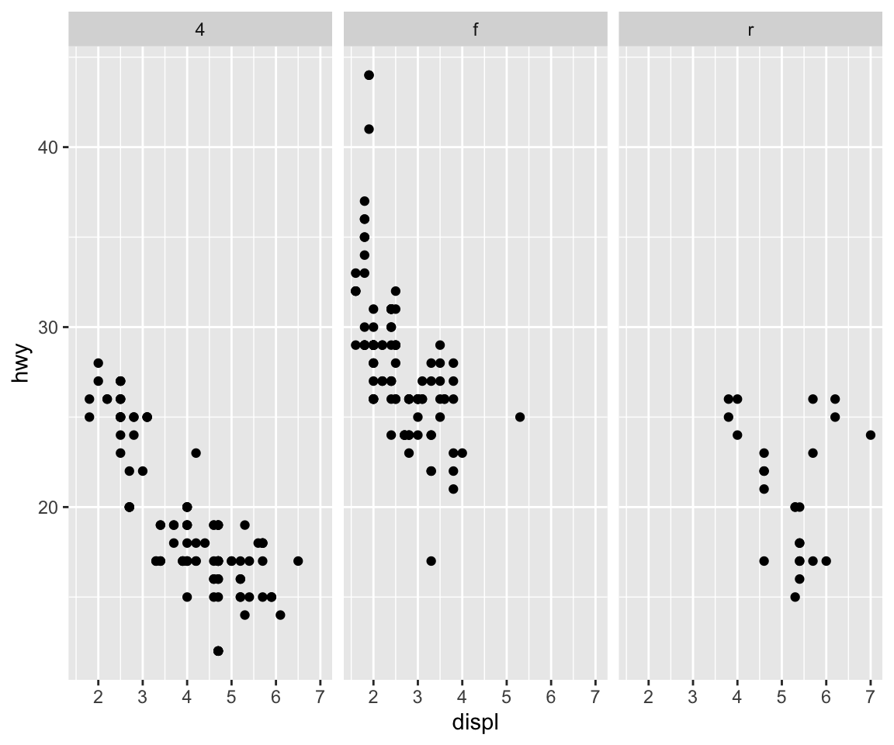
What if you wanted to add a smoother to each one of those panels? Simple, you literally just add the smoother as another geom.
qplot(displ, hwy, data = mpg, facets = . ~ drv) +
geom_smooth(method = "lm")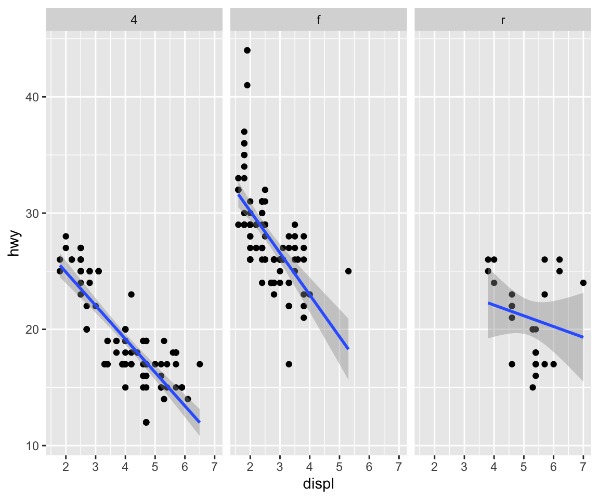
We used a different type of smoother above.
Here, we add a linear regression line (a type of smoother) to each group to see if there’s any difference.
Let’s facet our palmerpenguins dataset example and explore different types of plots.
Building off the code we previously wrote, perform the following tasks:
species with the the three species along rows.species# try it yourselfNext, make a histogram of the body_mass_g for each of the species colored by the three species.
# try it yourselfThe qplot() function in ggplot2 is the analog of plot() in base graphics but with many built-in features that the traditionaly plot() does not provide. The syntax is somewhere in between the base and lattice graphics system. The qplot() function is useful for quickly putting data on the page/screen, but for ultimate customization, it may make more sense to use some of the lower level functions that we discuss later in the next lesson.
qplot() function.
This case study will use data based on the Mouse Allergen and Asthma Cohort Study (MAACS). This study was aimed at characterizing the indoor (home) environment and its relationship with asthma morbidity amonst children aged 5–17 living in Baltimore, MD. The children all had persistent asthma, defined as having had an exacerbation in the past year. A representative publication of results from this study can be found in this paper by Lu, et al.
Because the individual-level data for this study are protected by various U.S. privacy laws, we cannot make those data available. For the purposes of this lesson, we have simulated data that share many of the same features of the original data, but do not contain any of the actual measurements or values contained in the original dataset.
Here is a snapshot of what the data look like.
library(here)here() starts at /Users/leocollado/Dropbox/Code/jhustatcomputing2023maacs <- read_csv(here("data", "maacs_sim.csv"), col_types = "icnn")
maacs# A tibble: 750 × 4
id mopos pm25 eno
<int> <chr> <dbl> <dbl>
1 1 yes 6.01 28.8
2 2 no 25.2 17.7
3 3 yes 21.8 43.6
4 4 no 13.4 288.
5 5 no 49.4 7.60
6 6 no 43.4 12.0
7 7 yes 33.0 79.2
8 8 yes 32.7 34.2
9 9 yes 52.2 12.1
10 10 yes 51.9 65.0
# ℹ 740 more rowsThe key variables are:
mopos: an indicator of whether the subject is allergic to mouse allergen (yes/no)
pm25: average level of PM2.5 over the course of 7 days (micrograms per cubic meter)
eno: exhaled nitric oxide
The outcome of interest for this analysis will be exhaled nitric oxide (eNO), which is a measure of pulmonary inflamation. We can get a sense of how eNO is distributed in this population by making a quick histogram of the variable. Here, we take the log of eNO because some right-skew in the data.
qplot(log(eno), data = maacs)`stat_bin()` using `bins = 30`. Pick better value with `binwidth`.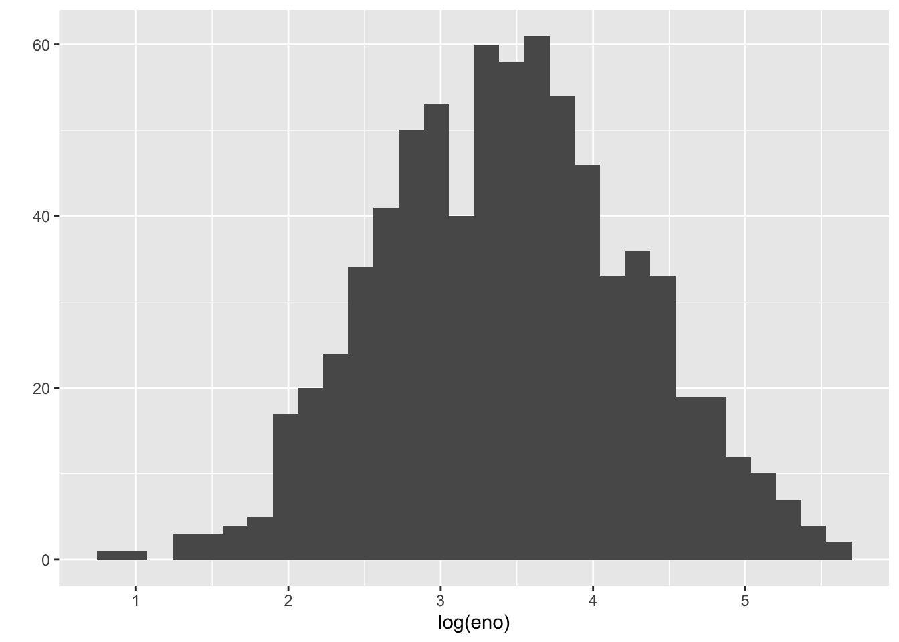
A quick glance suggests that the histogram is a bit “fat”, suggesting that there might be multiple groups of people being lumped together. We can stratify the histogram by whether they are allergic to mouse.
qplot(log(eno), data = maacs, fill = mopos)`stat_bin()` using `bins = 30`. Pick better value with `binwidth`.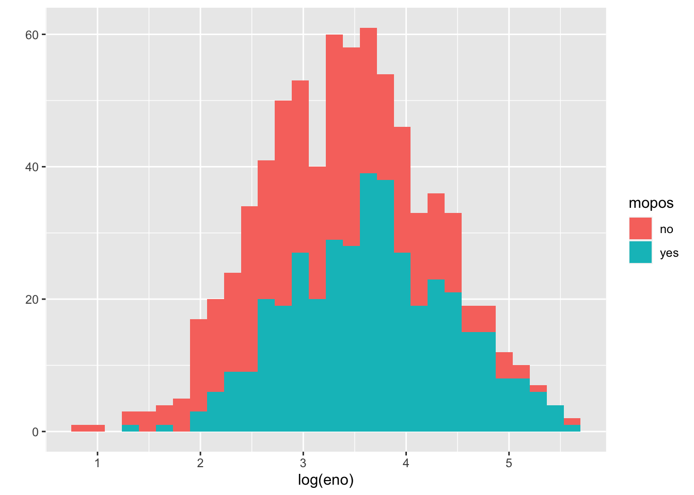
We can see from this plot that the non-allergic subjects are shifted slightly to the left, indicating a lower eNO and less pulmonary inflammation. That said, there is significant overlap between the two groups.
An alternative to histograms is a density smoother, which sometimes can be easier to visualize when there are multiple groups. Here is a density smooth of the entire study population.
qplot(log(eno), data = maacs, geom = "density")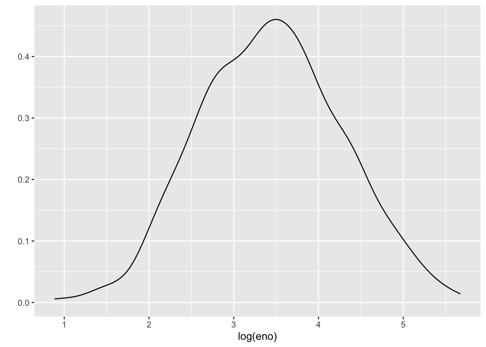
And here are the densities straitified by allergic status. We can map the color aesthetic to the mopos variable.
qplot(log(eno), data = maacs, geom = "density", color = mopos)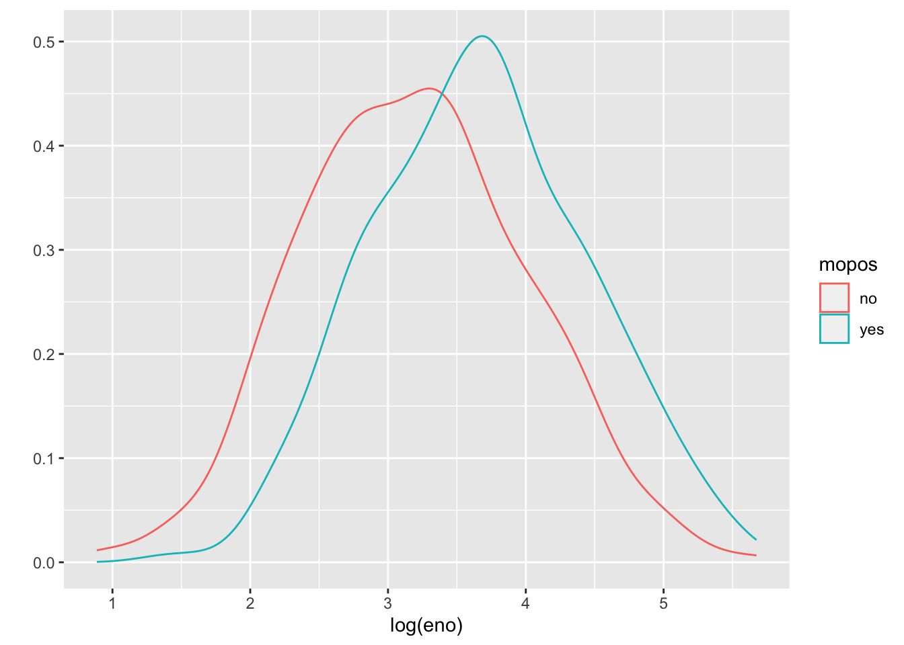
These tell the same story as the stratified histograms, which should come as no surprise.
Now we can examine the indoor environment and its relationship to eNO. Here, we use the level of indoor PM2.5 as a measure of indoor environment air quality. We can make a simple scatterplot of PM2.5 and eNO.
qplot(log(pm25), log(eno), data = maacs, geom = c("point", "smooth"))`geom_smooth()` using method = 'loess' and formula = 'y ~ x'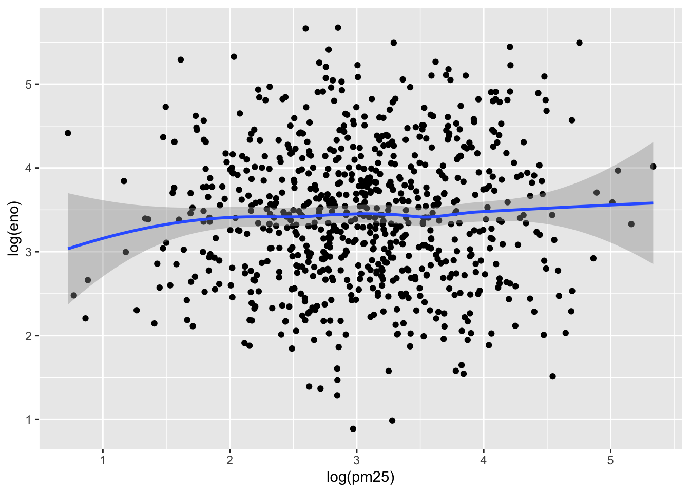
The relationship appears modest at best, as there is substantial noise in the data. However, one question that we might be interested in is whether allergic individuals are perhaps more sensitive to PM2.5 inhalation than non-allergic individuals. To examine that question we can stratify the data into two groups.
This first plot uses different plot symbols for the two groups and overlays them on a single canvas. We can do this by mapping the mopos variable to the shape aesthetic.
qplot(log(pm25), log(eno), data = maacs, shape = mopos)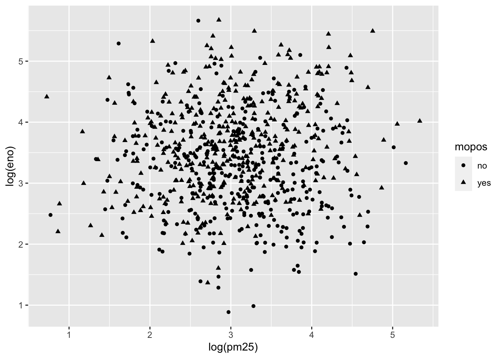
Because there is substantial overlap in the data it is a bit challenging to discern the circles from the triangles. Part of the reason might be that all of the symbols are the same color (black).
We can plot each group a different color to see if that helps.
qplot(log(pm25), log(eno), data = maacs, color = mopos)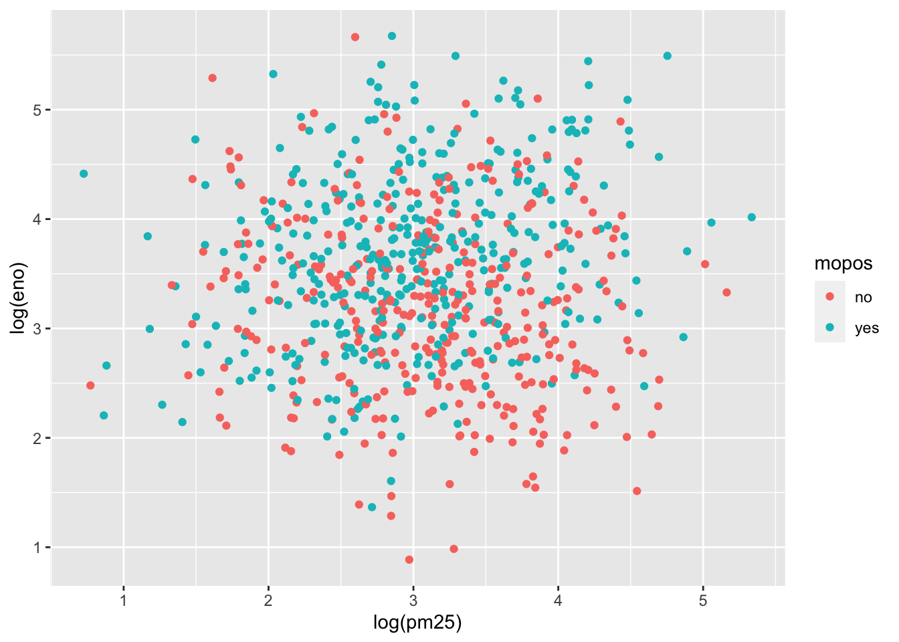
This is slightly better but the substantial overlap makes it difficult to discern any trends in the data. For this we need to add a smoother of some sort. Here we add a linear regression line (a type of smoother) to each group to see if there’s any difference.
qplot(log(pm25), log(eno), data = maacs, color = mopos) +
geom_smooth(method = "lm")`geom_smooth()` using formula = 'y ~ x'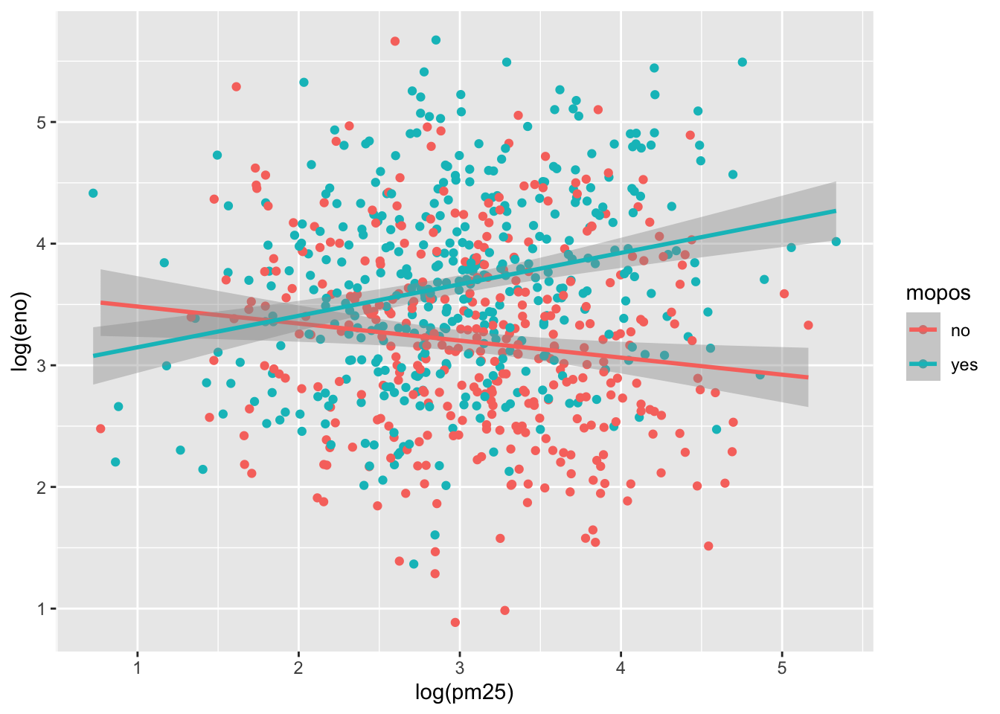
Here we see quite clearly that the red group and the green group exhibit rather different relationships between PM2.5 and eNO. For the non-allergic individuals, there appears to be a slightly negative relationship between PM2.5 and eNO and for the allergic individuals, there is a positive relationship. This suggests a strong interaction between PM2.5 and allergic status, an hypothesis perhaps worth following up on in greater detail than this brief exploratory analysis.
Another, and perhaps more clear, way to visualize this interaction is to use separate panels for the non-allergic and allergic individuals using the facets argument to qplot().
qplot(log(pm25), log(eno), data = maacs, facets = . ~ mopos) +
geom_smooth(method = "lm")`geom_smooth()` using formula = 'y ~ x'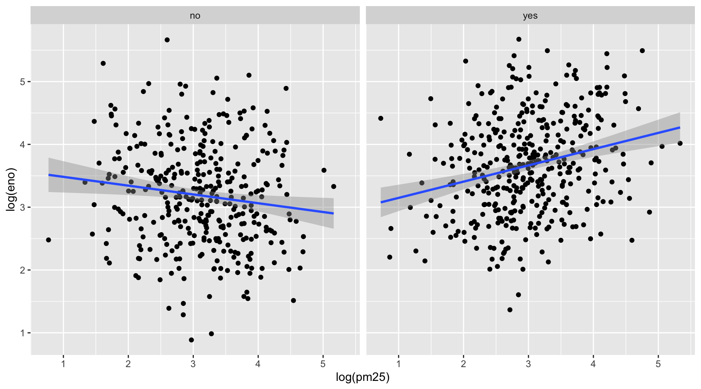
Here are some post-lecture questions to help you think about the material discussed.
qplot(x = displ, y = hwy, data = mpg, color = "blue")
Which variables in mpg are categorical? Which variables are continuous? (Hint: type ?mpg to read the documentation for the dataset). How can you see this information when you run mpg?
Map a continuous variable to color, size, and shape aesthetics. How do these aesthetics behave differently for categorical vs. continuous variables?
options(width = 120)
sessioninfo::session_info()─ Session info ───────────────────────────────────────────────────────────────────────────────────────────────────────
setting value
version R version 4.3.1 (2023-06-16)
os macOS Ventura 13.5
system aarch64, darwin20
ui X11
language (EN)
collate en_US.UTF-8
ctype en_US.UTF-8
tz America/New_York
date 2023-09-12
pandoc 3.1.5 @ /opt/homebrew/bin/ (via rmarkdown)
─ Packages ───────────────────────────────────────────────────────────────────────────────────────────────────────────
package * version date (UTC) lib source
bit 4.0.5 2022-11-15 [1] CRAN (R 4.3.0)
bit64 4.0.5 2020-08-30 [1] CRAN (R 4.3.0)
cli 3.6.1 2023-03-23 [1] CRAN (R 4.3.0)
colorout 1.2-2 2023-05-06 [1] Github (jalvesaq/colorout@79931fd)
colorspace 2.1-0 2023-01-23 [1] CRAN (R 4.3.0)
crayon 1.5.2 2022-09-29 [1] CRAN (R 4.3.0)
digest 0.6.33 2023-07-07 [1] CRAN (R 4.3.0)
dplyr * 1.1.3 2023-09-03 [1] CRAN (R 4.3.0)
evaluate 0.21 2023-05-05 [1] CRAN (R 4.3.0)
fansi 1.0.4 2023-01-22 [1] CRAN (R 4.3.0)
farver 2.1.1 2022-07-06 [1] CRAN (R 4.3.0)
fastmap 1.1.1 2023-02-24 [1] CRAN (R 4.3.0)
forcats * 1.0.0 2023-01-29 [1] CRAN (R 4.3.0)
generics 0.1.3 2022-07-05 [1] CRAN (R 4.3.0)
ggplot2 * 3.4.3 2023-08-14 [1] CRAN (R 4.3.0)
glue 1.6.2 2022-02-24 [1] CRAN (R 4.3.0)
gtable 0.3.4 2023-08-21 [1] CRAN (R 4.3.0)
here * 1.0.1 2020-12-13 [1] CRAN (R 4.3.0)
hms 1.1.3 2023-03-21 [1] CRAN (R 4.3.0)
htmltools 0.5.6 2023-08-10 [1] CRAN (R 4.3.0)
htmlwidgets 1.6.2 2023-03-17 [1] CRAN (R 4.3.0)
jsonlite 1.8.7 2023-06-29 [1] CRAN (R 4.3.0)
knitr 1.43 2023-05-25 [1] CRAN (R 4.3.0)
labeling 0.4.3 2023-08-29 [1] CRAN (R 4.3.0)
lattice 0.21-8 2023-04-05 [1] CRAN (R 4.3.1)
lifecycle 1.0.3 2022-10-07 [1] CRAN (R 4.3.0)
lubridate * 1.9.2 2023-02-10 [1] CRAN (R 4.3.0)
magrittr 2.0.3 2022-03-30 [1] CRAN (R 4.3.0)
Matrix 1.6-1 2023-08-14 [1] CRAN (R 4.3.0)
mgcv 1.9-0 2023-07-11 [1] CRAN (R 4.3.0)
munsell 0.5.0 2018-06-12 [1] CRAN (R 4.3.0)
nlme 3.1-163 2023-08-09 [1] CRAN (R 4.3.0)
palmerpenguins * 0.1.1 2022-08-15 [1] CRAN (R 4.3.0)
pillar 1.9.0 2023-03-22 [1] CRAN (R 4.3.0)
pkgconfig 2.0.3 2019-09-22 [1] CRAN (R 4.3.0)
purrr * 1.0.2 2023-08-10 [1] CRAN (R 4.3.0)
R6 2.5.1 2021-08-19 [1] CRAN (R 4.3.0)
readr * 2.1.4 2023-02-10 [1] CRAN (R 4.3.0)
rlang 1.1.1 2023-04-28 [1] CRAN (R 4.3.0)
rmarkdown 2.24 2023-08-14 [1] CRAN (R 4.3.1)
rprojroot 2.0.3 2022-04-02 [1] CRAN (R 4.3.0)
rstudioapi 0.15.0 2023-07-07 [1] CRAN (R 4.3.0)
scales 1.2.1 2022-08-20 [1] CRAN (R 4.3.0)
sessioninfo 1.2.2 2021-12-06 [1] CRAN (R 4.3.0)
stringi 1.7.12 2023-01-11 [1] CRAN (R 4.3.0)
stringr * 1.5.0 2022-12-02 [1] CRAN (R 4.3.0)
tibble * 3.2.1 2023-03-20 [1] CRAN (R 4.3.0)
tidyr * 1.3.0 2023-01-24 [1] CRAN (R 4.3.0)
tidyselect 1.2.0 2022-10-10 [1] CRAN (R 4.3.0)
tidyverse * 2.0.0 2023-02-22 [1] CRAN (R 4.3.0)
timechange 0.2.0 2023-01-11 [1] CRAN (R 4.3.0)
tzdb 0.4.0 2023-05-12 [1] CRAN (R 4.3.0)
utf8 1.2.3 2023-01-31 [1] CRAN (R 4.3.0)
vctrs 0.6.3 2023-06-14 [1] CRAN (R 4.3.0)
vroom 1.6.3 2023-04-28 [1] CRAN (R 4.3.0)
withr 2.5.0 2022-03-03 [1] CRAN (R 4.3.0)
xfun 0.40 2023-08-09 [1] CRAN (R 4.3.0)
yaml 2.3.7 2023-01-23 [1] CRAN (R 4.3.0)
[1] /Library/Frameworks/R.framework/Versions/4.3-arm64/Resources/library
──────────────────────────────────────────────────────────────────────────────────────────────────────────────────────